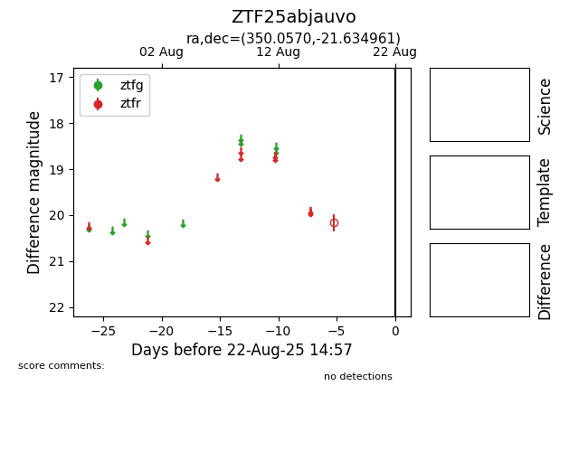

Target ZTF25abjauvo at 2025-08-22 14:57, see:
FINK: fink-portal.org/ZTF25abjauvo
Lasair: lasair-ztf.lsst.ac.uk/objects/ZTF25abjauvo
ALeRCE: alerce.online/object/ZTF25abjauvo
alt names
ZTF25abjauvo (ztf,alerce)
coordinates:
equatorial (ra, dec) = (350.0570,-21.63496)
galactic (l, b) = (42.7901,-68.55229)
photometry
